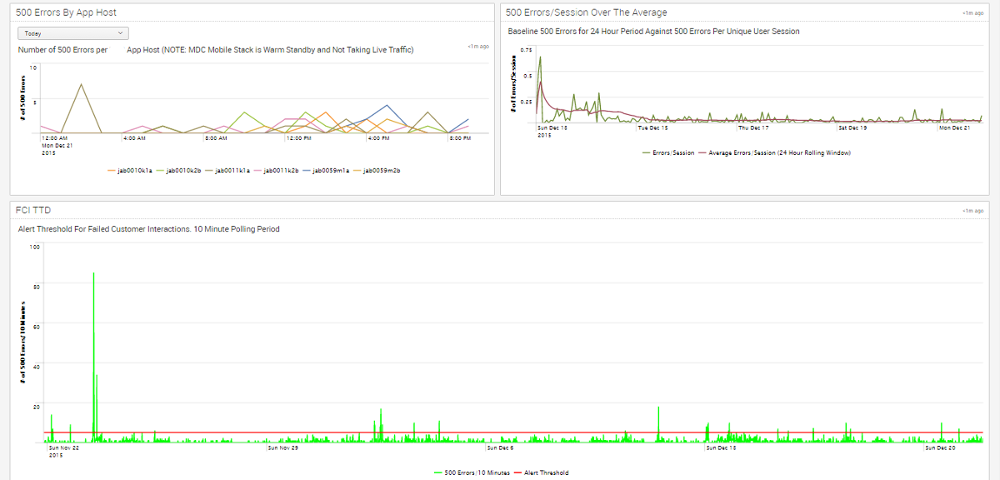
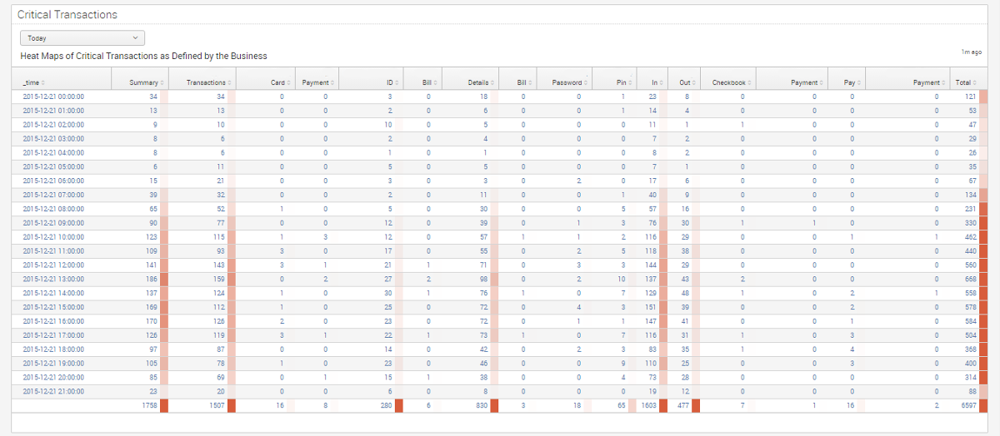
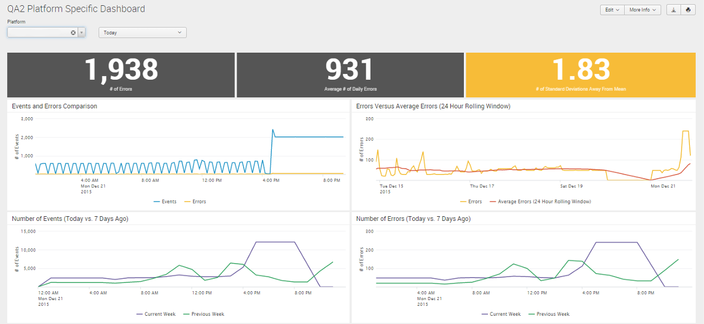
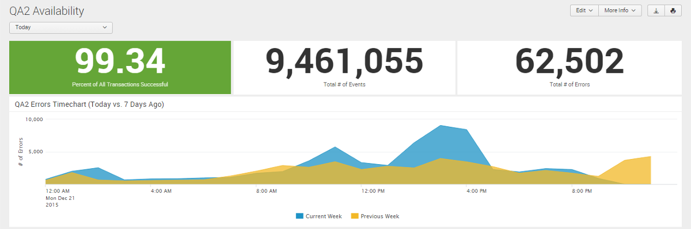

Colloborated with teams to create real-time big data dashboards using a machine-generated big data tool.
Dates: October 2014 - May 2016
Team: Scott Dombkowski
Splunk is a big data tool that allows you to search, monitor, and analyze machine-generated data. I first started working with Splunk in December of 2014 when Capital One made a significant investment into the platform. My Capital One team was responsible for building interest and leading the adoption of Splunk within the Retail Bank line of business. Over the course of the last 2 years I spent at Capital One, I acquired the knowledge to become the main Splunk resource within Retail Bank. I was able to maximize the benefits of Splunk for Capital One and help numerous others learn how to best utilize Splunk for their individual roles. I was also responsible for creating the majority of searches and dashboards within Retail Bank so teams could monitor their platforms in near real-time. These searches and dashboards included error comparisons based on the day of the week, automatic alerts, and real-time descriptive statistics. The materials I created in Splunk provided insights and access to data that platform teams and leadership either did not have access to before or found very difficult to acquire. While working on Splunk, I worked with a variety of different audiences from VPs to college hires.
Responsibilities
- Consulted with teams throughout the Retail Bank to understand their platforms, logs, and expectations for Splunk.
- Created searches/dashboards to fulfill teams’ expectations and to demonstrate what was possible with Splunk.
- Collaborated with platform teams to continuously improve their searches/dashboards.
Splunk Platform-Specific Executive Dashboard

Splunk Platform-Specific Executive Dashboard

Splunk Platform-Specific Executive Dashboard

Splunk Platform-Specific Pre-Production Dashboard

Splunk Platform-Specific Pre-Production Dashboard